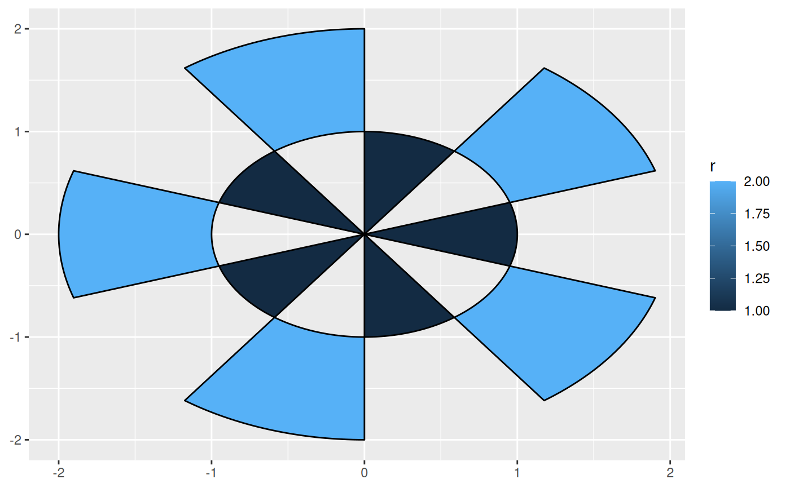
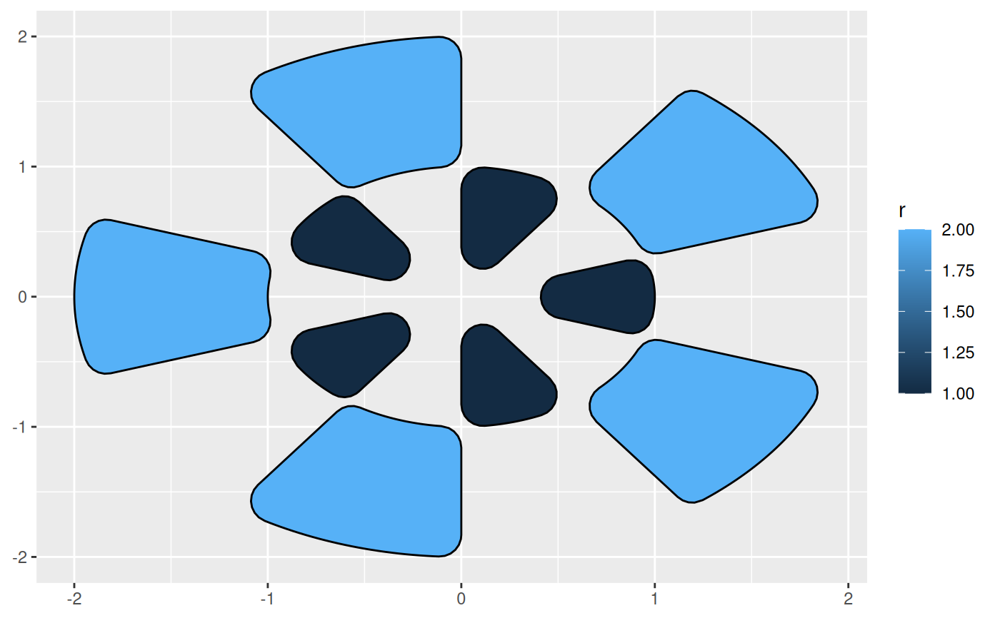
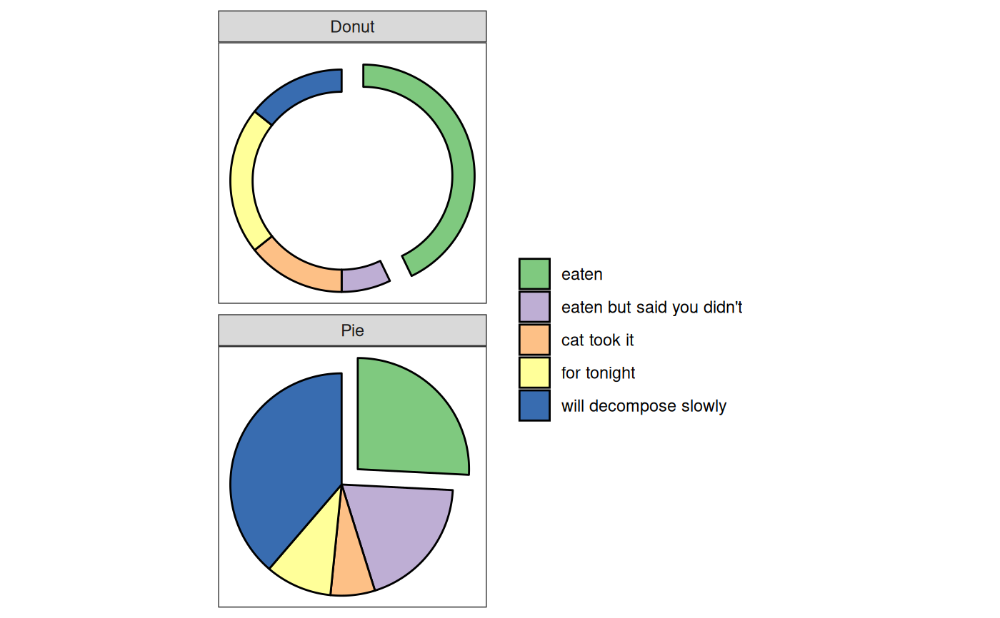

This set of stats and geoms makes it possible to draw arcs and wedges as known from pie and donut charts as well as more specialized plottypes such as sunburst plots.
stat_arc_bar(mapping = NULL, data = NULL, geom = "arc_bar", position = "identity", n = 360, na.rm = FALSE, show.legend = NA, inherit.aes = TRUE, ...) stat_pie(mapping = NULL, data = NULL, geom = "arc_bar", position = "identity", n = 360, sep = 0, na.rm = FALSE, show.legend = NA, inherit.aes = TRUE, ...) geom_arc_bar(mapping = NULL, data = NULL, stat = "arc_bar", position = "identity", n = 360, expand = 0, radius = 0, na.rm = FALSE, show.legend = NA, inherit.aes = TRUE, ...)
| mapping | Set of aesthetic mappings created by |
|---|---|
| data | The data to be displayed in this layer. There are three options: If A A |
| geom | The geometric object to use display the data |
| position | Position adjustment, either as a string, or the result of a call to a position adjustment function. |
| n | The number of points used to draw a full circle. The number of points on each arc will then be calculated as n / span-of-arc |
| na.rm | If |
| show.legend | logical. Should this layer be included in the legends?
|
| inherit.aes | If |
| ... | Other arguments passed on to |
| sep | The separation between arcs in pie/donut charts |
| stat | The statistical transformation to use on the data for this layer, as a string. |
| expand | A numeric or unit vector of length one, specifying the expansion amount. Negative values will result in contraction instead. If the value is given as a numeric it will be understood as a proportion of the plot area width. |
| radius | As |
An arc bar is the thick version of an arc; that is, a circle segment drawn as a polygon in the same way as a rectangle is a thick version of a line. A wedge is a special case of an arc where the inner radius is 0. As opposed to applying coord_polar to a stacked bar chart, these layers are drawn in cartesian space, which allows for transformations not possible with the native ggplot2 approach. Most notable of these are the option to explode arcs and wedgets away from their center point, thus detaching it from the main pie/donut.
geom_arc_bar understand the following aesthetics (required aesthetics are in bold):
x0
y0
r0
r
start - when using stat_arc_bar
end - when using stat_arc_bar
amount - when using stat_pie
explode
color
fill
size
linetype
alpha
x and y coordinates for the polygon
The start coordinates for the segment
geom_arc() for drawing arcs as lines
# If you know the angle spans to plot it is easy arcs <- data.frame( start = seq(0, 2 * pi, length.out = 11)[-11], end = seq(0, 2 * pi, length.out = 11)[-1], r = rep(1:2, 5) ) # Behold the arcs ggplot(arcs) + geom_arc_bar(aes(x0 = 0, y0 = 0, r0 = r - 1, r = r, start = start, end = end, fill = r))# geom_arc_bar uses geom_shape to draw the arcs, so you have all the # possibilities of that as well, e.g. rounding of corners ggplot(arcs) + geom_arc_bar(aes(x0 = 0, y0 = 0, r0 = r - 1, r = r, start = start, end = end, fill = r), radius = unit(4, 'mm'))# If you got values for a pie chart, use stat_pie states <- c( 'eaten', "eaten but said you didn\'t", 'cat took it', 'for tonight', 'will decompose slowly' ) pie <- data.frame( state = factor(rep(states, 2), levels = states), type = rep(c('Pie', 'Donut'), each = 5), r0 = rep(c(0, 0.8), each = 5), focus = rep(c(0.2, 0, 0, 0, 0), 2), amount = c(4, 3, 1, 1.5, 6, 6, 1, 2, 3, 2), stringsAsFactors = FALSE ) # Look at the cakes ggplot() + geom_arc_bar(aes( x0 = 0, y0 = 0, r0 = r0, r = 1, amount = amount, fill = state, explode = focus ), data = pie, stat = 'pie' ) + facet_wrap(~type, ncol = 1) + coord_fixed() + theme_no_axes() + scale_fill_brewer('', type = 'qual')